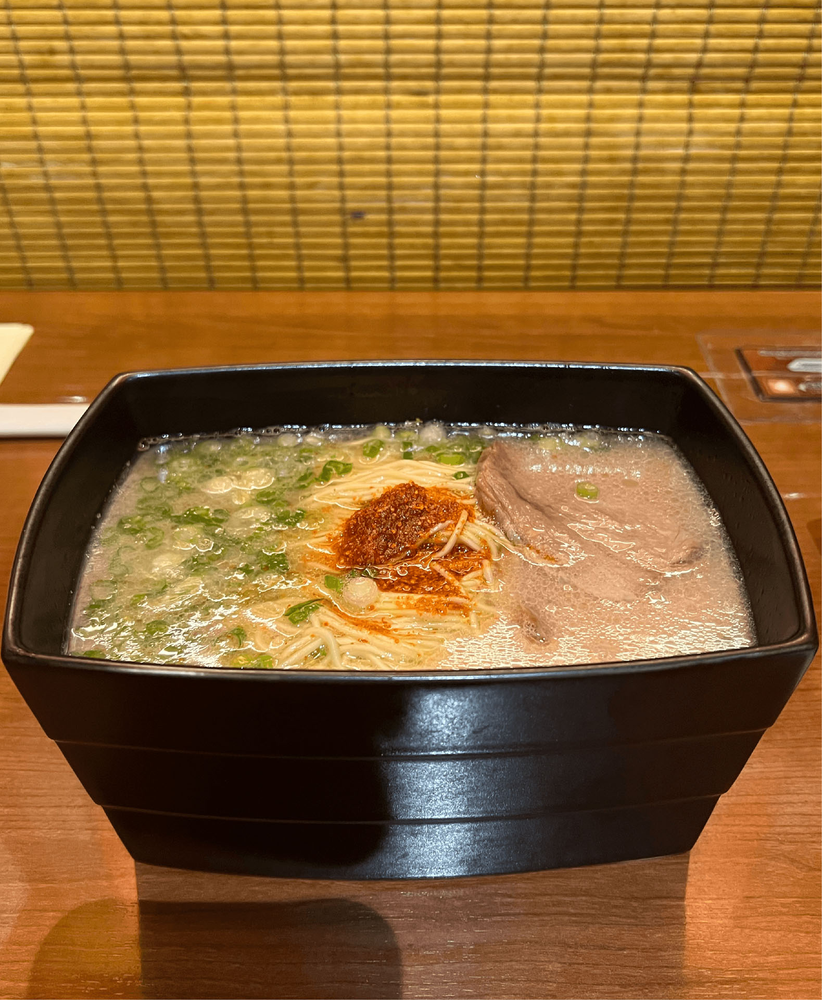

RESTAURANTS
Here are restaurants, cafes, and brunch places that I like in the city.
The sections are divided by location, Brooklyn and Manhattan.
BROOKLYN
Cecconi's Dumbo
• 55 Water St, Brooklyn, NY 11201 •
Wood-fired pizzas, pastas, and other Italian dishes complemented by cocktails & waterfront views. Perfect for special occasions or a fancy night out. I had my 18th birthday lunch here!
Link to website
TimeOut Market
• 55 Water St, Brooklyn, NY 11201 •
TimeOut Market New York is a bi-level waterfront hangout showcasing a curated lineup of local food & drink plus cultural events. It is the perfect place to stop by near the pier.
Link to website
Mama Capri
• 247 Smith St, Brooklyn, NY 11231 •
A small, cozy, cute Italian restaurant located in downtown Brooklyn with a refreshing atmosphere. Perfect for date night! The Mama Capri Risotto was my personal favorite.
Link to website
Savelli
• 195 Smith St, Brooklyn, NY 11201 •
Refined Italian spot with an old-world vibe, featuring wood-fired pizza, happy hour & a wine cellar. The atmosphere is GORGEOUS, perfect for instagram photos :)
Link to website
K Pot
• 430 Albee Square W, Brooklyn, NY 11201 •
Enjoy all-you-can-eat Korean Barbecue or Hotpot! Be sure to go with an empty stomach. Bring all your friends for a filling dinner.
Link to website
Chinah
• 2 MetroTech Center, Brooklyn, NY 11201 •
In a hurry? Grab a healthy Chinese-style bento box for a delicious yet simple meal. The black rice is absolutely amazing. Highly recommend :D
Link to website
NAYA
• 15 MetroTech Center, Brooklyn, NY 11201 •
Do you love hummus? A perfect healthy option for hummus lovers. I like to think of it as a healthy alternative for Chipotle.
Link to website
Brooklyn Ice Cream Factory
• 14 Old Fulton St, Brooklyn, NY 11201 •
Be sure to grab ice cream at the Brooklyn Icecream Factory when you’re down by the pier.
Link to website
Amai Bā
• 70 Henry St, Brooklyn, NY 11201 •
Enjoy all-time favorite and exotic ice cream flavors at Amai Bā. I had an ube flavored ice cream and so far it is my all time favorite ice cream flavor.
Link to website
Antoya
• 37 W 32nd St, New York, NY 10001 •
Looking for the best K-BBQ in K-town? Antoya is the place you’re looking for. Expect a line especially at dinner time.
Link to website
Hong Chun Cheon
• 2 W 32nd St, New York, NY 10001 •
Spicy Korean Dakgalbi (chicken) perfect for stress relief and a spicy challenge. Hog Chun Cheon is a go-to place for me whenever I miss Korean food.
Link to website
Gop Story
• 312 5th Ave 2nd floor, New York, NY 10001 •
Blackpink approved gopchang restaurant in K Town! Must visit if you love gopchang. They also have amazing fried rice!
Link to website
BCD Tofu House
• 5 W 32nd St, New York, NY 10001 •
Casual Korean restaurant chain serving classic fare such as soft tofu soup, bibimbap & bulgogi.Very popular, expect around a 30-minute wait.
Link to website
Cote
• 16 W 22nd St, New York, NY 10010 •
A fancy Korean-style steak house. Good for special occasions! Kind of pricy, but definitely worth it :)
Link to website
Rosemary's
• 18 Greenwich Ave, New York, NY 10011 •
One of many nice Italian restaurants in Greenwich village with a nice vibe. Pastas were AMAZING. Near the NYU main campus.
Link to website
Pinto Garden
• 117 W 10th St, New York, NY 10011 •
Stylish option for seasonally inspired modern Thai cuisine in a rustic-chic setting. Gorgeous floral interior.
Link to website
Szechuan Mountain House
• 23 St Marks Pl, New York, NY 10003 •
Group-friendly destination for homey Sichuan dishes (many made with chiles) & pots of tea. If you love mala, this is where you should be.
Link to website
Lao Ma Spicy
• 58 E 8th St, New York, NY 10003 •
My all-time favorite dry pot restaurant. Fresh ingredients, so many options. I’m pretty sure I went here every week for about a month…
Link to website
Zhang Liang Hot Pot
• 66 Mott St, New York, NY 10013 •
Good, affordable hot pot for whenever you feel like it! They also have brown sugar boba here, a perfect treat after a spicy meal.
Link to website
Toribro
• 366 W 52nd St, New York, NY 10019 •
If you’re looking for a quick bite of good ramen near Central Park, head to Toribro!
Link to website
Ichiran
• 132 W 31st St, New York, NY 10001 •
No-tip ramen place! Unique yet delicious soup base. Go for a unique sit-alone experience!
Link to website

AOI Kitchen
• 320 E 6th St, New York, NY 10003 •
Casual eatery in a walk-down space serving omurice, sandos & other Japanese fusion fare.
Link to website
Spicy Moon
• 68 W 3rd St, New York, NY 10012 •
My FAVORITE vegan restaurant with the coolest vibe. Cozy eatery with eclectic decor serving up plant-based Chinese Szechuan plates in a casual setting.
Link to website
Ruby's
• 219 Mulberry St A, New York, NY 10012 •
Petite Australian cafe luring a stylish crowd with vegemite toast & beet-topped burgers. There are also several locations around NYC!
Link to website
The Grey Dog
• 244 Mulberry St, New York, NY 10012 •
Neighborhood coffeehouse serving eggs, granola, sandwiches & salads in a homey, laid-back setting.
Link to website
Little Bake Shop
• 30 Prince St, New York, NY 10012 •
Authentic dessert shop with a vintage vibe. Their baked goods are definitely worth a try! My current favorite is their red velvet cake, which was my birthday cake :P
Link to website
Levain Bakery
• 1484 3rd Ave, New York, NY 10028 •
You can’t forget Levain when it comes to NYC’s best baked goods! Pick up a cookie or two at this iconic bakery. There are several locations across NYC.
Link to website
Xing Fu Tang
• 133 2nd Ave, New York, NY 10003 •
The absolute best brown sugar boba you can get. They hand make the tapioca pearls right in front of you, and they are the CHEWIEST BOBA EVER.
Link to website
Blue Bottle
• 396 Broadway, New York, NY 10013 •
Blue bottle is a trendy cafe chain offering upscale coffee drinks & pastries, plus beans & brewing equipment. The one is SoHo is one of my favorite study spots!
Link to website
Think Coffee
• 350 Broadway, New York, NY 10013 •
Amazing study environment. Their matcha is amazing, and the avocado toast is a MUST try! If you like to change your study environment once in a while, head to think coffee.
Link to website
Matcha Cafe Maiko
• 132 Bowery, New York, NY 10013 •
Authentic matcha. If you’re a matcha lover, this place is a must. I highly recommend the match float!
Link to website
Kore Coffee
• 26A Elizabeth St, New York, NY 10013 •
A small and aesthetic cafe. Kore means whale in Korean :) Tiramisu latte and matcha croffle are their signature menus.
Link to website
Mango Mango
• 23 St Marks Pl, New York, NY 10003 •
Dozens of delicious mango desserts! The perfect dessert cafe after a good meal. They also have really good boba.
Link to website
Chihiro Tea
• 552 LaGuardia Pl, New York, NY 10012 •
An amazing boba place behind Bobst library. Their mango catcher is a must try. NYU students get 10% off~
Link to website